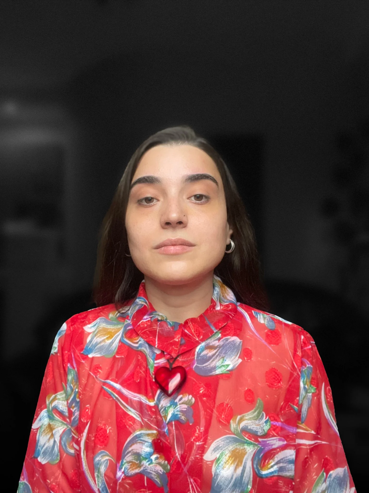

About
Mariam Gogichaishvili
Branding, print, digital & motion.

About me
I’m Mariam Gogichaishvili, a graphic designer with a background in fine art and four years of experience. I build identities, design for print and digital, and bring ideas into motion.
Strong ideas are my starting point. Curiosity, persistence, and hard work are how I get them finished.
Explore my work ↗